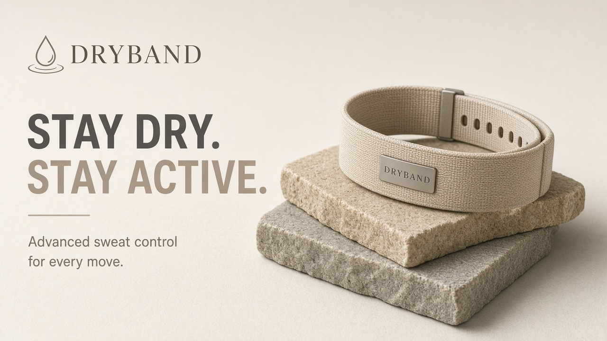
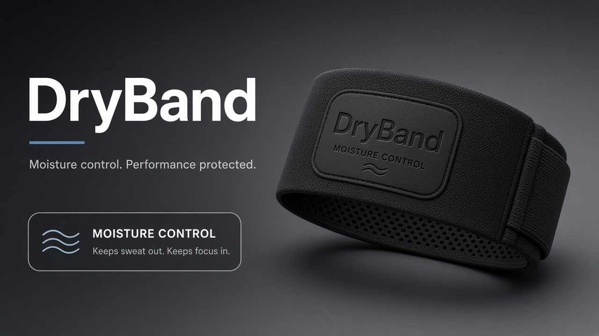
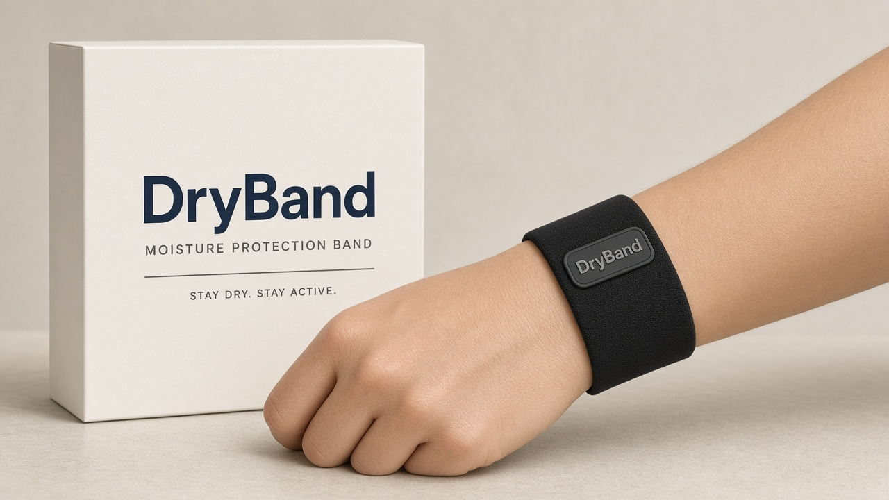

Personal prototype concept
The ear dryer that doesn't need your hands.
DryBand is an idea I'm exploring: a band that wraps like headphones and dries both ears at once — no wand, no switching sides after shower or swim. This isn't a company or a product you can buy.
Get updates on the concept · No spam · Not for sale

The problem I'm solving
After shower. After swim. Both ears. Hands free.
Water in the outer ear canal is annoying — and holding a handheld dryer one ear at a time gets old fast. This concept is for the moment you step out, towel in hand, and want both sides handled without gripping anything.
-
After shower
Primary scenario: slip it on, run a short cycle, and finish getting ready while both canals dry.
-
After swim
Pool, lake, or ocean — one hands-free pass for both ears before you head out.
-
Hands free
No wand to grip. No switching sides. Towel your hair, check your phone, or just stand there.
How the concept would work
Both ears. One cycle. Under 90 seconds.
-
Place on both ears
Soft tips sit at the outer ear canal opening. The band rests comfortably — nothing goes deep inside.
-
Start the cycle
Gentle warm airflow targets both ears at once. Hands stay on your towel or robe.
-
Done in ~60–90 seconds
Cycle ends on its own. Remove, set aside, move on — both sides covered.

Why explore this?
Two ears. One device. Zero grip.
Handheld ear dryers like Mack's Ear Dryer PRO (~$60) do one ear at a time — hold, aim, wait, switch, repeat. The DryBand concept would be a hands-free dual-ear take. If it ever existed as a thing, ~$99 feels like a fair sketch vs. ~$60 for a wand — but that's napkin math, not a price list.
| DryBand concept | Handheld wand | |
|---|---|---|
| Ears at once | Both | One at a time |
| Hands required | None | One hand, always |
| Typical cycle | ~60–90 s total | ~60 s × 2 ears |
| Concept price sketch | ~$99 if built | ~$60 (retail) |
Not headphones, not a hearing-aid dryer box, not ear drops, not a hair dryer — just a concept for outer-canal moisture after water.
Form-factor directions
Three ways to wear the same idea
Exploring fit and comfort in renders. All three share dual tips and a hands-free cycle — the band style is still open.
-
A Open-ear hook Lightweight, Shokz-like wrap -

B Soft headband Plush, spa-ready comfort -
C Over-ear yoke Structured dual-nozzle frame
Gentle drying, sensible care
- The concept is about helping evaporate moisture in the outer ear canal with controlled warm airflow — not deep insertion, not medical treatment.
- Not a medical device. If you have ear pain, infection, tubes, or ongoing symptoms, follow your clinician's guidance.
- Replaceable soft tips would keep things hygienic in a real build. Swap on a sensible schedule; rinse and store the band between uses.
- Never force tips into the canal. Outer-ear drying after water exposure only.
Stay in the loop
Get updates on the concept
Curious if this ever becomes real? Join the prototype waitlist for occasional notes — renders, form-factor picks, maybe a build log. No shop, no preorder, no startup pitch.